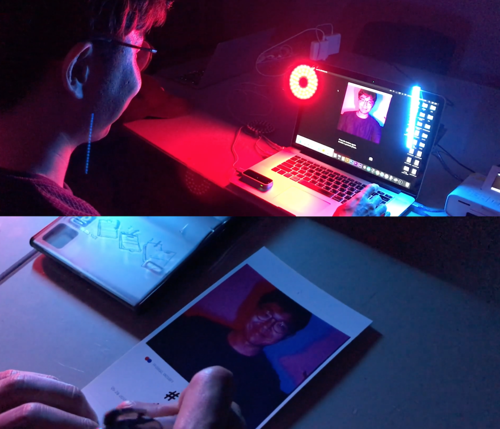
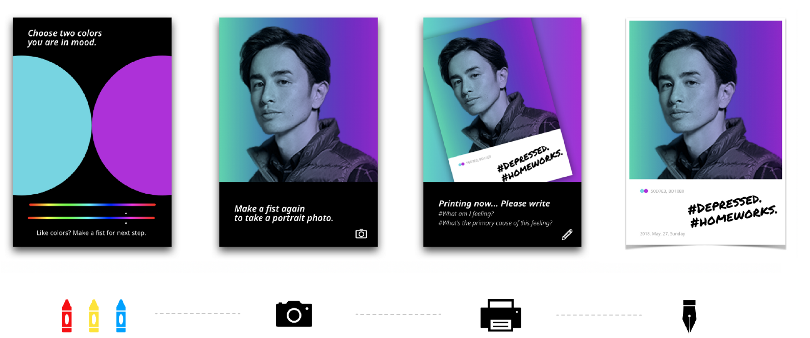
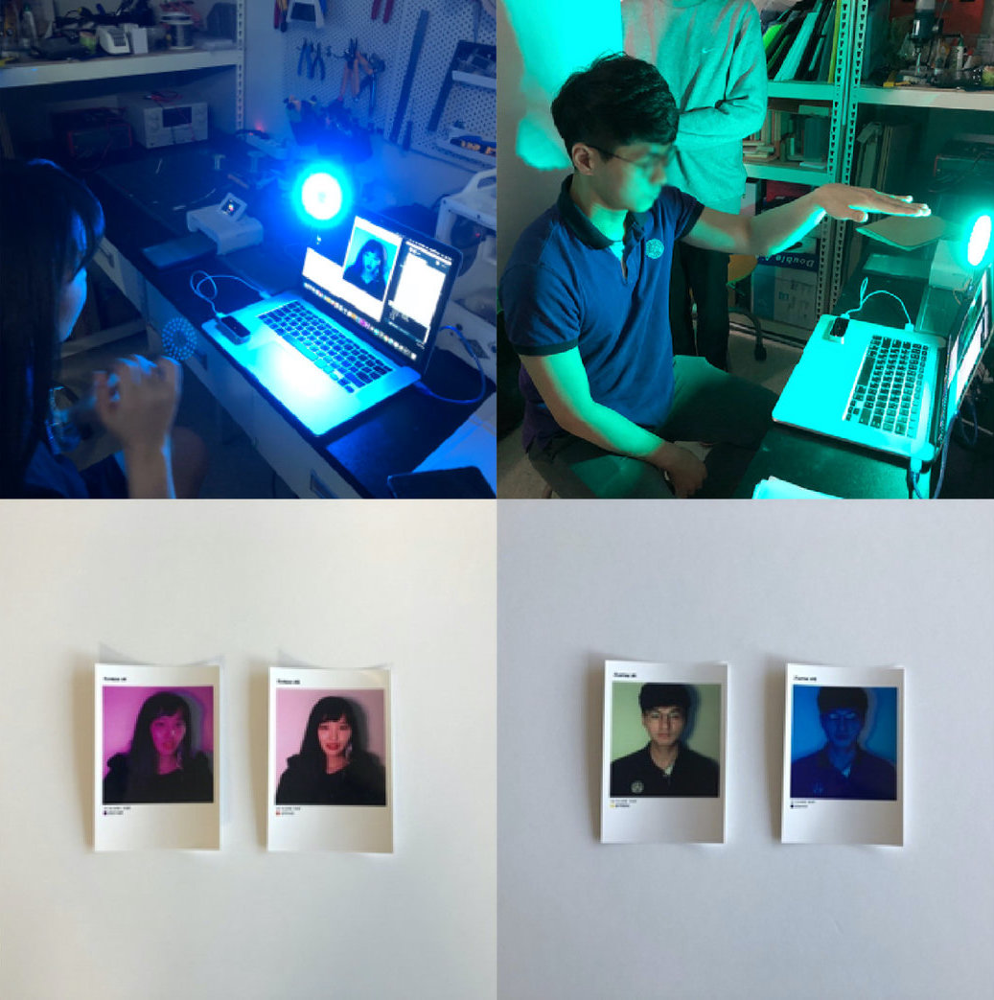
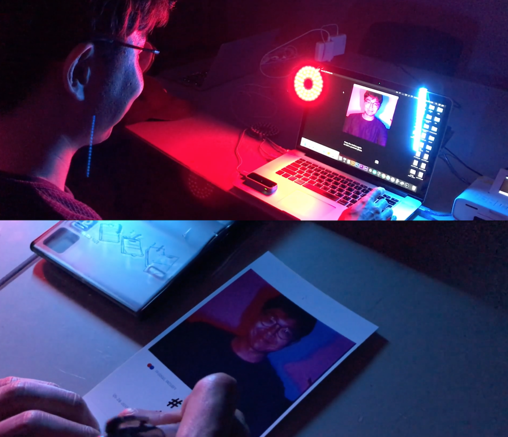
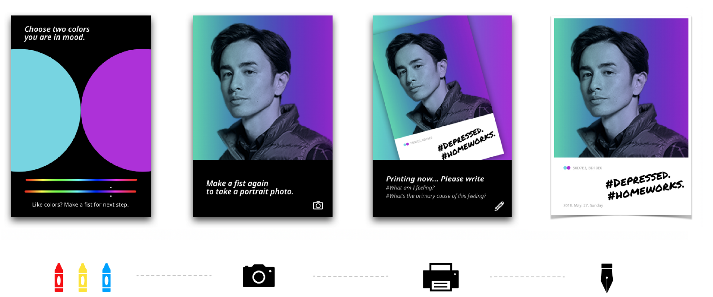
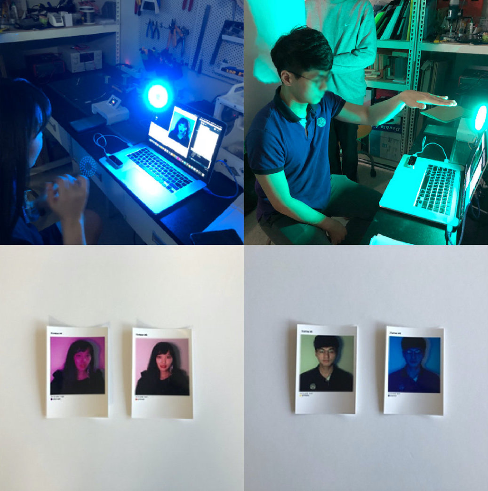

Innerstagram
인물 사진과 컬러를 이용한 감정 저널링 시스템 디자인
Type
Human-Computer Interaction 프로토타이핑
Affiliation
UNIST 창의디자인공학과
Role
인터랙션 엔지니어
프로젝트 기획, 문헌 조사, 인터랙션 디자인, 하드웨어 설계, 소프트웨어 개발, 논문 집필
Tools
Arduino 하드웨어,
Processing 그래픽스,
Leap Motion 제스처센싱
Achievement
Duration
2018.04 ~ 05 (2개월)
Overview
Innerstagram은 내 마음에 드는 오늘의 색상을 선택하여, 해당 색상들이 덮여진 셀피를 찍고 즉석으로 출력된 사진에 내 현재 감정과 맥락 등을 기록하는 감정 저널링 시스템이다.

Background
소셜 미디어에 나의 가짜 모습을 올림으로서, 잃어가는 진짜 내 자신을 바라보는 방법을 고민해보기 위해 프로젝트를 시작하였다.
꾸준히 내 감정을 나의 기준에 맞는 색상으로 인덱싱하여, 불렛 저널처럼 기록할 수 있는 방법을 고안해 보았다.
User Scenario
Innerstgram의 시나리오는 다음과 같은 순서로 이루어진다.
- 색상을 최대 두 가지 선택한다.
- 색상이 비친 내 얼굴을 찍는다.
- 사진을 프린트한다.
- 일기를 쓰듯 내 감정과 맥락 등을 기록한다.


Video Link
Type
Human-Computer Interaction 프로토타이핑
Affiliation
UNIST 창의디자인공학과
Role
인터랙션 엔지니어
프로젝트 기획, 문헌 조사, 인터랙션 디자인, 하드웨어 설계, 소프트웨어 개발, 논문 집필Tools
Arduino 하드웨어, Processing 그래픽스, Leap Motion 제스처센싱
Achievement
Duration
2018.04 ~ 05 (2개월)
Overview
Innerstagram은 내 마음에 드는 오늘의 색상을 선택하여, 해당 색상들이 덮여진 셀피를 찍고 즉석으로 출력된 사진에 내 현재 감정과 맥락 등을 기록하는 감정 저널링 시스템이다.

Background
소셜 미디어에 나의 가짜 모습을 올림으로서, 잃어가는 진짜 내 자신을 바라보는 방법을 고민해보기 위해 프로젝트를 시작하였다. 꾸준히 내 감정을 나의 기준에 맞는 색상으로 인덱싱하여, 불렛 저널처럼 기록할 수 있는 방법을 고안해 보았다.
User Scenario
Innerstgram의 시나리오는 다음과 같은 순서로 이루어진다.
- 색상을 최대 두 가지 선택한다.
- 색상이 비친 내 얼굴을 찍는다.
- 사진을 프린트한다.
- 일기를 쓰듯 내 감정과 맥락 등을 기록한다.

